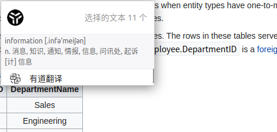

配置Ubuntu工作环境
现如今的开发环境选择很多，现在主流的操作系统有 Windows，Linux 和 MacOS。
体验最好，评价最高的就是 MacOS 了，Windows 一直中规中矩。
但是现在在 Linux 系统上，软件生态也越来越成熟了，通过合适的工具，也能打造一个合适的开发环境。Ubuntu 是一个比较受欢迎的 Linux 系统发行版。
现在主流的电脑都支持安装 Linux 系统，如果不想用 Windwos 来用作开发，那就可以安装 Ubuntu 等 Linux 系统，而且 Linux 系统相对来说对硬件的要求更低。
本文介绍如何配置一个合适的 Ubuntu 开发环境。
本文基于 Ubuntu18.04
1. 基础软件
输入法
首先就是要安装一个输入法，系统自带的输入法基本就没办法用了，现在比较好用的搜狗输入法、百度输入法都有 Linux 版本，可以按照自己的喜好使用。
我更喜欢百度输入法（百度其他的产品一般，但是输入法是个好产品），之前使用的也是搜狗输入法，但使用搜狗输入可能会导致开发工具 IntelliJ IDEA 无法打开，所以就换成了百度输入法。
Git
这个就不用说了，现在 Git 早就不止用来做代码的托管了，我现在自己的博客也是使用 Git 来进行管理。
utools
在 MacOS 中， Spotlighting 或者 Alfred 都是解放双手的利器，使用者两个工具可以大大减少鼠标的使用，提高输入效率。
之前在 Linux 系统中找不到类似的替代品，但是 utools 的出现解决了这个问题，而且 utools 在三个系统中都可以使用。
使用这个工具，可以将打开程序，搜索等功能只依靠键盘，不需要腾出手去使用鼠标。
utools 的功能很强大，除了常见的搜索功能，还可以支持各类的插件，比如安装有道词典的插件之后就可以划屏取词了。效果如下：

WPS
如果要在 Ububtu 中处理一些文档以及查看 PDF ，在 Ubuntu 系统中，WPS 应该是最好的选择了，希望 WPS 可以越做越好。
2. 终端环境
终端是一个很重要的工具，很多工具以及登录远程服务器环境的时候，都需要用到终端。
Ubuntu 中自带的终端工具不好用，可以使用 terminator 终端作为替代品，当然，这个也可以使用其他的终端，这个根据自己的喜好就可以了。
在 Ubuntu 中，默认使用的是 bash， zsh 在命令的补全和拼写功能更加强大，但是在执行脚本的时候，还是可以使用 bash，日常的使用过程中，zsh 是更好的选择。
在使用 zsh 时，已经有很多的工具可以配套使用， oh-my-zsh 是一个 zsh 的配置环境，这个配置可以让终端的交互性更好，对于很多常用的命令都有快捷的输入方式。
配合 oh-my-zsh 还有有一个可以配套使用的配置 zsh-autosuggestions ，这个配置可以根据终端中历史的输入，然后自动补全命令，可以提高输入的效率。
在使用终端时，还有 tmux 这个神器值得使用，很多情况下，需要与远程的服务器保持长久的链接，比如执行某个任务，但是与远程服务器的连接是有时间限制的，在超过这个时间限制之后，连接就会断开，如果这个时候任务还没有运行完成，那么也会被终止。
tmux 可以解决这个问题，tmux 可以保存这些连接，即使终端关闭，也可以保存这些连接，在需要使用的时候再恢复。
3. 开发工具
至于开发工具，不同的人使用的工具差别就很大了。但是好在一些很好的 IDE 都可以在 Ubuntu 中使用。比如 jetbrains 系列的 IDE，基本都能覆盖到主流的编程语言。而且这些 IDE 基本上都有社区免费版本，虽然功能上没有那么全，但是基本上也够用。
如果想要解锁完整版本，那就只能单买版权或者使用教育版本（只要有大学邮箱就可以，对学生和老师免费）。
有些人不喜欢使用 IDE，那么也自然可以使用编辑器，可以按照自己的喜好选择 Vim 和 emacs 或者 VsCode。对于 Vim，无论是否使用，都还是要学习一下基本的使用方法，因为在操作系统中，Vim 是默认的编辑工具，如果不会基本的使用，在Linux 系统中如果要做些编辑操作的话，就会很麻烦。
除了这些之外，就是安装自己需要的编程语言了。
另外如果涉及到 Web 开发，那么可能就会需要 Postman 这个工具，可以方便我们进行接口的测试，而且 Postman 也不仅仅是接口的测试工具，还可以将这些接口以团队进行协作。
文 / Rayjun